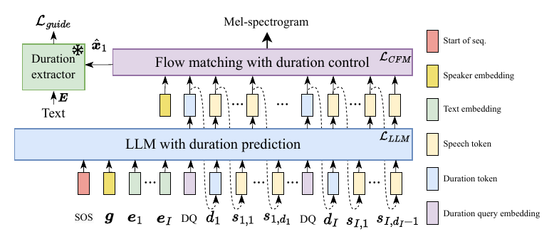
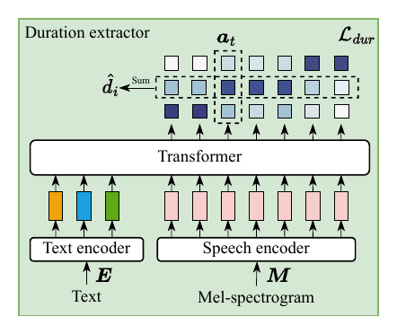

DuraMark: A Duration-Embedded Watermarking Framework for Synthesized Speech
Original Interspeech demoDemo repository
- speech watermarking
- duration-embedded watermarking
- robustness
- duration-controllable TTS
Abstract
Loading abstract…
Model Architecture
DuraMark has two implementations. DuraMark-Basic uses duration-controllable synthesis and duration extraction. DuraMark-Enh adds reward-weighted fine-tuning (RWF) of the LLM and duration-aware classifier-free guidance (CFG) at inference. Both share the watermark embedding, detection, and extraction procedures.


(a) Duration-controllable TTS


(b) Duration extractor

Results
The following examples are synthesized by DuraMark-Enh using texts from the Chinese AISHELL-3 test set.
AISHELL-3
Loading audio examples…
| Text | DuraMark-Enh |
|---|